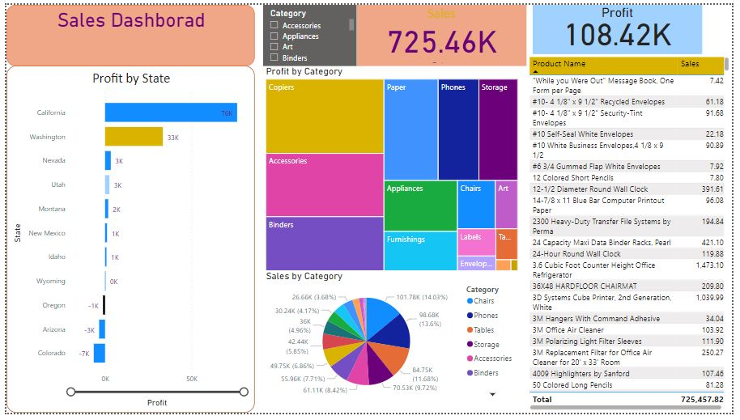

In the current YouTube landscape, my project conducts a precise analysis to determine the most popular genre, trending content themes, and high-reach video formats. This data-driven approach empowers aspiring creators to make informed decisions for optimizing their channel's impact
The process of conducting Exploratory Data Analysis (EDA) and Data Preprocessing on the Google App Store Rating Dataset entails the systematic examination and refinement of the dataset. This includes tasks such as the identification and treatment of outliers, addressing missing data, and performing necessary feature engineering to optimize the dataset for subsequent advanced analytical endeavors. These crucial initial steps lay the foundation for robust and insightful data-driven insights in the context of Google App Store ratings.

The company's sales are increasing in all categories, but the accessories category is growing the fastest. This suggests that the company should focus its marketing efforts on accessories.
The company's sales are concentrated in a few key states, but it is starting to see growth in other states. This suggests that the company should expand its sales efforts to other states.
The company's sales are seasonal, with the highest sales occurring in the fourth quarter. This suggests that the company should plan its marketing and sales activities accordingly.
Overall, the sales dashboard is a valuable tool that can help the company track its sales performance and identify areas for improvement. The company is using the dashboard to make informed decisions about its marketing, sales, and product development strategies.